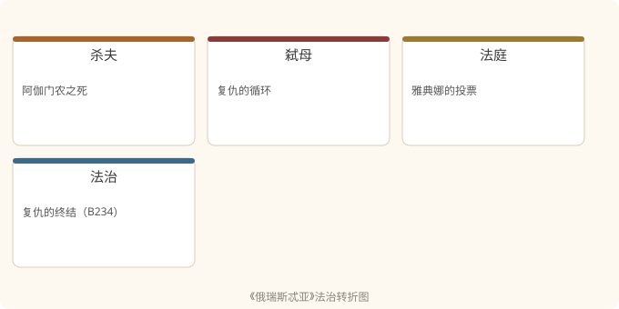

俄瑞斯忒亚
一、基本信息
| 作者 | 埃斯库罗斯 |
|---|---|
| 成书/出版 | 公元前458年（Britannica：Oresteia produced in 458——B234） Aeschylus — Encyclopaedia Britannica（百科全书） |
| 国别/地区 | 古希腊 |
| 时代 | 古代 · 古典时代 |
| 体裁 | 三联悲剧 |
| 语言 | 古希腊语 |

《俄瑞斯忒亚》法治转折图（主题·结构图）
二、创作背景
Britannica（B234）：埃斯库罗斯唯一存世完整三联剧——'the Oresteia, explores how vengeance gives way to the rule of law'（复仇让位于法治——B234）。
三部：《阿伽门农》《奠酒人》《福island》——'The Eumenides'（仁慈女神，卷名通说待核）。
三、内容脉络
《阿伽门农》：凯旋的王被克吕泰涅斯特拉杀死（通说待核）。
《奠酒人》：俄瑞斯忒斯弑母复仇（通说待核）。
《福island》：雅典娜法庭——血仇让位于法治（B234 主题+通说待核）。
四、主要人物表
| 人物 | 身份 | 说明 |
|---|---|---|
| 克吕泰涅斯特拉 | 王后 | 复仇者（通说待核） |
| 俄瑞斯忒斯 | 王子 | 弑母者 |
| 雅典娜 | 女神 | 法庭的建立者（通说待核） |
五、主题与艺术特点
- 复仇→法治的文明转折（B234）。
- 血亲复仇的循环（通说）。
- 雅典法庭的神话奠基（通说待核）。
六、影响与评论
- Britannica：唯一存世完整三联剧；'explores how vengeance gives way to the rule of law'（B234）。
Aeschylus — Encyclopaedia Britannica（百科全书） - Britannica：获13次戏剧节首奖（B234 作者级）。
Aeschylus — Encyclopaedia Britannica（百科全书）
七、阅读建议
难点
- 阿特柔斯家族血咒谱系。
- 三部连续阅读。
- 《罗念生全集》悲剧卷（上海人民出版社，通说待核）。
- 英文原版（公有领域）。
埃斯库罗斯必读之首。
八、待核实
- 三部剧名（Agamemnon/Choephoroi/Eumenides）核对。
- 法庭情节细节核对。
- 罗念生译本信息待核。